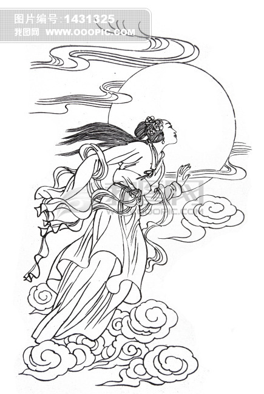

嫦娥奔月

嫦娥又是怎样奔月的呢?在古书上有种种不同的说法。根据《淮南子》的记载是，后羿到西王母那里去求来了长生不死之药，嫦娥却偷吃了全部的长生不死药，奔逃到月亮上去了。嫦娥奔月以后，很快就后悔了，她想起了丈夫平日对她的好处和人世间的温情，对比月亮里的孤独，倍觉凄凉。《淮南子·外八篇》中说，羿从西王母处请来不死之药，逢蒙听说后前去偷窃，偷窃不成就要加害嫦娥。情急之下，嫦娥吞下不死药飞到了天上。由于不忍心离开大羿，嫦娥滞留在月亮广寒宫。广寒宫里寂寥难耐，于是就催促吴刚砍伐桂树，让玉兔捣药，想配成飞升之药，好早日回到人间与大羿团聚。